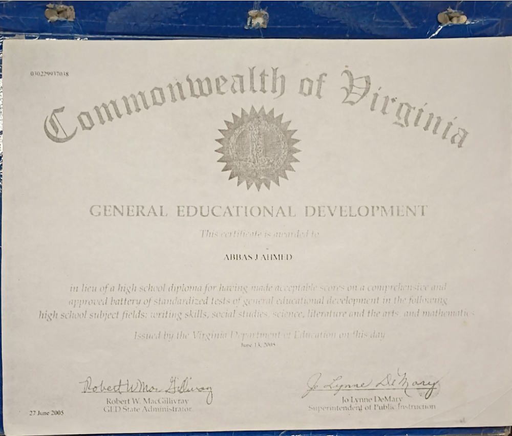
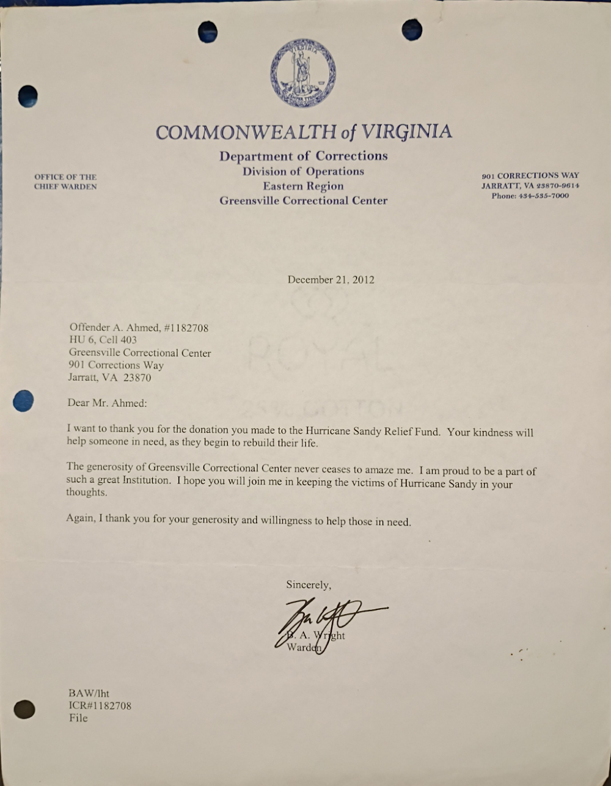
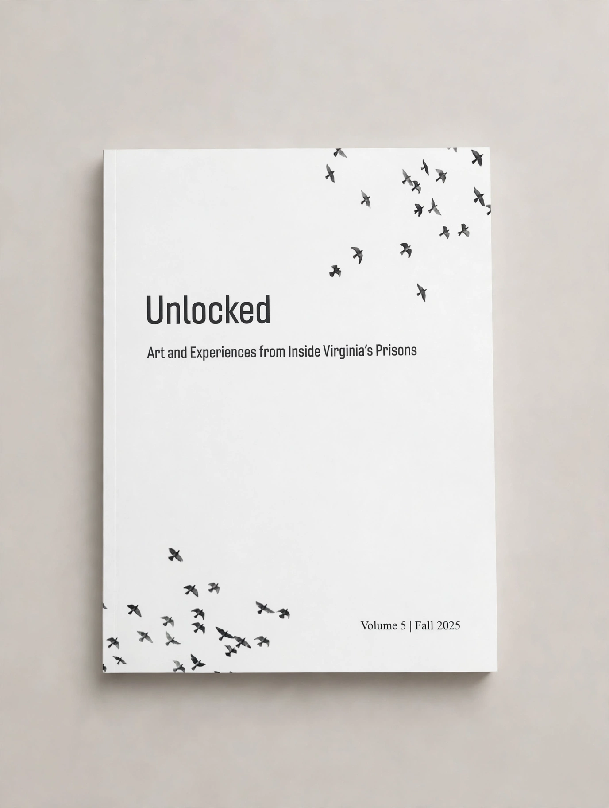
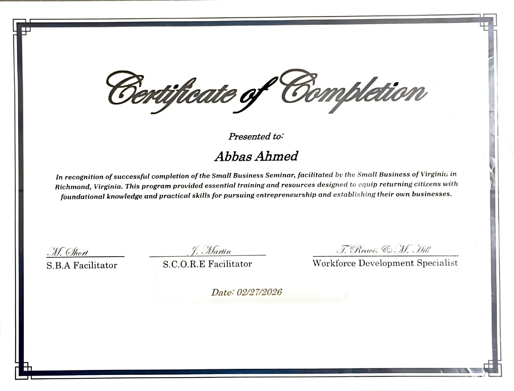

Progress in Prison
The man he became behind bars
Education, recognition, and writing over twenty years in Virginia custody. This page is about who Abbas is now, not a claim that good conduct erases a conviction — and it does not hide the adverse parts of the record, which stay on the case page.

2005
GED earned
Abbas earned his GED in 2005, the year of his sentencing. He had arrived from Pakistan at 17 with very limited English and taught himself to read and write in English in custody.

2012
Warden recognition
A 2012 warden recognition letter thanks Abbas for donating to the Hurricane Sandy Relief Fund. It is presented as recognition of a specific act, not as a general character ruling by the prison.

2018
Paralegal diploma
Abbas earned a paralegal diploma in 2018. That training is part of why he has been able to work on his own case record, his writing, and his legal correspondence from inside.

Source: Family-supplied diploma image
Fall 2025
Published writer — Unlocked, Vol. 5
Two pieces by Abbas — a prison-life poem and the essay “Prisons: A Reflection on Freedom and Self-Imprisonment” — were published in “Unlocked: Art and Experiences from Inside Virginia's Prisons, Vol. 5, Fall 2025.” Virginia Tech Publishing lists “Abbas J. Ahmed” among its contributors.

2026
Small Business Seminar — Certificate of Completion
Abbas completed the Small Business Seminar facilitated by the Small Business of Virginia in Richmond, receiving a Certificate of Completion dated February 27, 2026. The program provides entrepreneurship training for returning citizens — essential training and resources, foundational knowledge, and practical skills for pursuing entrepreneurship and establishing their own businesses.

Ongoing
Writing in progress — memoir and books
Abbas has complete drafts, with copyright pages, of a memoir (“My Address Is The Sky”), Caravan Vol. 1 & 2, and a REFLECTIONS program. He describes them as incomplete, not published. This site does not present drafts as published books.
Source: Family record, 2026
Undated
The poem behind the memoir’s title
“I'm a bird in a cage / and I want to fly high / this cage is not my home, / my address is the sky.” — Abbas Ahmed, from My Address Is The Sky
Source: Abbas's poem, supplied by the family, 2026
More achievement and character documents exist in the family file — a family-supplied folder listed 28 such documents in October 2026. Only the items above are posted here, because only they have been verified as images for this site. Further certificates will be added as verified scans arrive, not from summaries alone. No disciplinary record is hidden by this page: the case page records that his disciplinary record has 8 entries, and that fact is not removed because this page is positive.